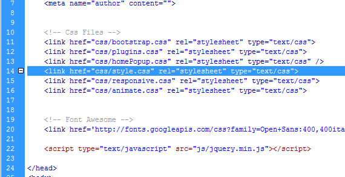

Documentation
About the SpaLand One-page Template
This Template is made with Bootstrap v 3.3.2 and it's very easy to modify it as you wish. Just follow the instructions below!
Included files
The main.zip file you have just downloaded contains the following folders:
- 1. _documentation
- 2. contact_form ( files inside: contact.php)
- 3. css (prettyPhoto.css, animate.css,bootstrap.min.css, flexslider.css, fontElegant.css, hover.css, animate.css, style.css, style-home-2.css )
- 4. images (includes folders: icon, team, service, portfolio, slider, prettyphoto )
- 5. js ( sorting.js, myscript.js, animate.js, jquery.min.js, bootstrap.min,js,validate.js,parallax.js,goMap.js,jquery.isotope.min.js,)
- 6. php (popup files)
Customizing the Template
- How do i change the template color?
Spaland comes with 5 colors variations:
- style.css (green)
- style-pink.css
- style-brown.css
- style-red.css
- style-orange.css
Open the index.html page and change the link to the css file you'd like to use (see the picture below). Remember that the style.css is green, so if you want to use red color for your site, just link to the style-red.css file

MODIFYING THE PAGE BACKGROUND
Inside the css folder, find the css file that you want to use. Open it, go to line 48 and change the bg color with the one of your choice.
- How do i replace the logo with my own?
Locate the images folder and replace the logo.png (60 x 43 px) with your own and upload it to your server. (see picture below).
- How do i modify the menù voices?
Open the index.html and find the line 51 as shown in the picture below. Modify the menu voices as you wish.
- How do i change the main slideshow pictures?
Locate the slider folder (see below) inside the images folder and replace the 1.jpg (1680x890), 2.jpg (1680x890) and so on....
- How do i customize the home-page popup window?
Open the js folder and locate the homePopup.js file. Open it and start customizing the colors, the message, the size, the picture, the animation and so on...
You may want to change the picture, open the homePopup.js file, go to the line 59 and change the path to the picture you have chosen. You can insert even a youtube or vimeo video inside the popup (see the line 61 in the picture below). Activate the line removing the slash and put the video code after the word media.
Change the text to display inside the popup as you want (line 51 and 52) or set the size of the window (lines 64 and 65)
- How do i insert a video inside the popup window?
Open the js folder and locate the homePopup.js file. Open it and go to the line 61, activate the line removing the slash and the asterisk, replace the youtube video code with your own. Remember to deactivate the default image (line 59 see picture below)
- How do i change the main slider template animation?
Open the index.html file and go to line 69, change the word highlighted (wow bounceInUp) on the picture below and replace with your own. I.e, if you want to make the image enter from left side just write bounceInRight (if you want to see a set of animations available go here: https://daneden.github.io/animate.css/
- How do i remove the dotted overlay from slideshow images?
Open the index.html page and just remove the code shown in the picture below. If you haven't modified the page html code, line 75, 88 and 101.
- How do i replace the video in home-page 2 version with one of my choice?
Inside the main directory, find the video folder (see picture below) create 1 video in 2 version: mp4 and webm. Name them mp4_video.mp4 and webm_video.webm and upload everything inside the video folder on your server. You should see your video playing on the home-page.
- How do i change the main menù color?
Locate all the css files inside the css folder. Find the line 231 and customize the menù color as you wish. (see below)
- How do i change the portfolio section images?
Inside the images folder, find the portfolio folder (see below) and replace all the images inside named 1.jpg, 2.jpg, 3.jpg and so on... Size 350x250 px If you want to create a bigger image for each pictures, create and put them inside the zoom folder. (images/portfolio/zoom)
- How do i change the staff section images?
Inside the images folder, find the team folder and replace all the images inside (see below) named 1.jpg, 2.jpg, 3.jpg and so on... Size 270x290 px
- Where do i have to insert my own e-mail address?
Locate the mail.php file inside the main folder, open it and change the email address (see below). This is the email address where you will receive all the requests coming from your site.
- Where do i insert my social network links inside the site?
Open the index.html, find the line 755, insert the link to your social page: <a href="javascript:void(0)">.
- How do i change the map address inside the contact section?
Open the index.html file. go to the line 688 and change the address with your own
Further Support
For additional help and /or customization, you may contact us using the form on our Shapebootstrap profile page.
Thank you again for your purchase!
Best Regards
Tony Sale
CbsNet
Internet & Mobile